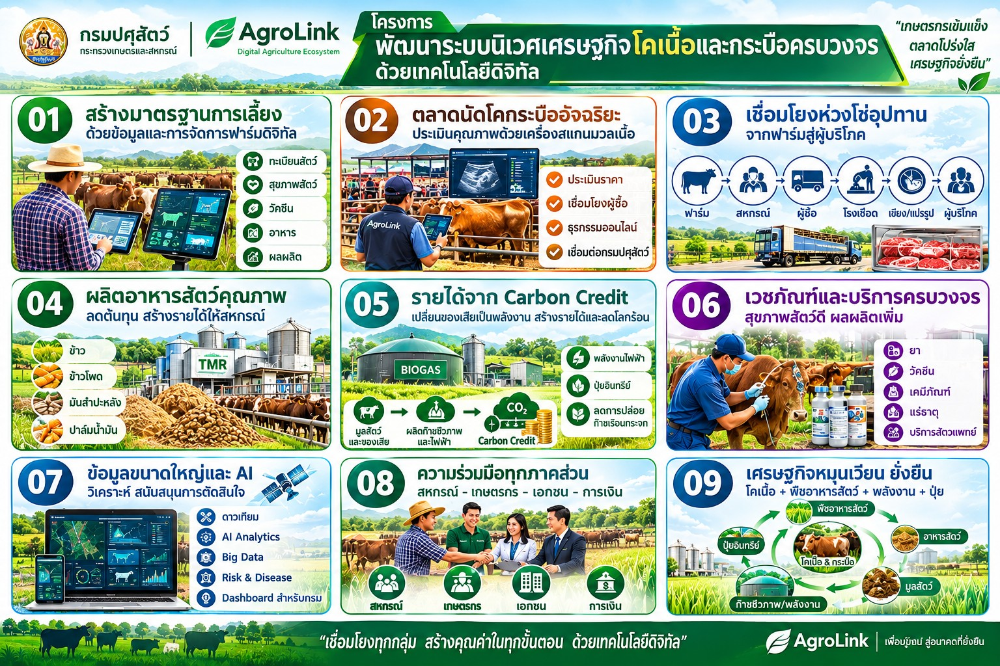

ครบทั้งทะเบียนฟาร์ม การเงินเป็นงวดตามรอบการเลี้ยง อาหารสัตว์ ตลาดขายสัตว์ และรายได้เสริมจากคาร์บอนเครดิต ในที่เดียว — ใช้งานฟรี สมัครง่าย เริ่มต้นได้ในไม่กี่นาที

แพลตฟอร์มเดียวที่รวมข้อมูลฟาร์ม การเงิน อาหารสัตว์ ตลาด และรายได้เสริม ไว้ให้เกษตรกรจัดการได้ด้วยตัวเอง
ลงทะเบียนฟาร์มหรือคอกเลี้ยงพร้อมปักขอบเขตบนแผนที่ดาวเทียม ระบุประเภทและจำนวนสัตว์ เก็บเป็นข้อมูลอ้างอิงของท่านเอง
ขอสินเชื่อที่เบิกจ่ายเป็นงวดตามช่วงอายุสัตว์ ลดภาระดอกเบี้ยเมื่อเทียบกับการรับเงินกู้ก้อนเดียวตั้งแต่ต้นรอบ
เข้าถึงตลาดขอใบเสนอราคา ประกาศรับซื้อด่วน และการประมูลราคาจากโรงงานแปรรูปและโรงฆ่าสัตว์ที่เข้าร่วม เพื่อให้ได้ราคาที่ดีที่สุด
คำนวณสูตรอาหารสัตว์ให้เหมาะกับชนิดและช่วงอายุสัตว์ เชื่อมกับวัตถุดิบข้าวโพดและมันสำปะหลังครบวงจรของ AgroLink โดยตรง
ยืนยันการจัดการมูลสัตว์แบบลดการปล่อยก๊าซมีเทน เช่น บ่อหมักก๊าซชีวภาพ เพื่อสร้างรายได้เสริมจากคาร์บอนเครดิตในอนาคต
บันทึกประวัติสุขภาพสัตว์และการฉีดวัคซีน พร้อมรับการแจ้งเตือนความเสี่ยงโรคระบาดในพื้นที่ใกล้เคียง
หลังสมัครสมาชิก เกษตรกรผู้เลี้ยงสัตว์บกจะเข้าถึงบริการเหล่านี้ได้ทันทีจากหน้าหลักเกษตรกร
ปักขอบเขต GPS บนแผนที่ดาวเทียม เลือกประเภทฟาร์ม (โคเนื้อ โคนม สุกร สัตว์ปีก แพะ-แกะ) และระบุจำนวนสัตว์
ดูหน่วยงาน (สหกรณ์/ผู้ปล่อยกู้/โรงงานแปรรูป) ที่ท่านเป็นสมาชิกอยู่ในที่เดียว
ติดตามคะแนนความน่าเชื่อถือทางสินเชื่อและประวัติย้อนหลัง
ขอสินเชื่อที่เบิกจ่ายตามรอบการเลี้ยง ผูกกับฟาร์ม/คอกเลี้ยงของท่านได้โดยตรง
ดูสถานะสัญญาที่ทำกับสหกรณ์ ผู้ให้สินเชื่อ หรือโรงงานแปรรูป
ไม่พลาดข่าวสารสำคัญจากหน่วยงานที่เกี่ยวข้องกับบัญชีของท่าน
ให้โรงงานแปรรูป/โรงฆ่าสัตว์ยื่นข้อเสนอราคารับซื้อสัตว์มีชีวิตหรือเนื้อสัตว์ของท่านโดยตรง
ติดตามประกาศรับซื้อแบบเร่งด่วนจากผู้รับซื้อที่เข้าร่วม
เสนอขายสัตว์ผ่านระบบประมูลเพื่อให้ได้ราคาสูงสุด
ดูราคารับซื้อสัตว์/เนื้อสัตว์จากหลายแหล่งเพื่อประกอบการตัดสินใจขาย
เลือกซื้อวัตถุดิบอาหารสัตว์ เช่น ข้าวโพดและมันเส้นจากเครือข่าย AgroLink
คำนวณสูตรอาหารที่เหมาะสมกับชนิดและช่วงอายุของสัตว์ที่เลี้ยง
สั่งผสมอาหารสัตว์สูตรเฉพาะตามผลคำนวณ ไม่ต้องผสมเอง
รวมออเดอร์กับฟาร์มอื่นเพื่อต่อรองราคาซื้อวัตถุดิบอาหารสัตว์ในปริมาณมาก
ยืนยันการใช้บ่อหมักก๊าซชีวภาพหรือวิธีจัดการมูลสัตว์ที่ลดการปล่อยก๊าซเรือนกระจก เพื่อเตรียมสร้างรายได้จากคาร์บอนเครดิต
จองบริการสัตวแพทย์เคลื่อนที่สำหรับตรวจสุขภาพและฉีดวัคซีนตามรอบที่ต้องการ
สมัครฟรี ใช้เวลาไม่กี่นาที ไม่ต้องมีเอกสารสิทธิ์ที่ดินก็เริ่มลงทะเบียนได้
กรอกข้อมูลพื้นฐานเพื่อเปิดบัญชีผู้ใช้งาน:
หลังสมัครสำเร็จ เข้าสู่ระบบด้วยเบอร์โทรศัพท์ที่ลงทะเบียนไว้ เพื่อเริ่มใช้งานพอร์ทัลเกษตรกร
บันทึกข้อมูลฟาร์มหรือคอกเลี้ยงของท่าน (ไม่บังคับว่าต้องทำก่อนใช้บริการอื่น แต่แนะนำให้ทำเพื่อใช้สิทธิ์ครบทุกบริการ):
เข้าสู่หน้าหลักเกษตรกร ดูภาพรวมบัญชี สมาชิกภาพ คะแนนความน่าเชื่อถือ ฟาร์ม สัญญา คำขอสินเชื่อ และเข้าถึงตลาด/บริการทั้งหมดที่กล่าวถึงด้านบนได้จากเมนูเดียว
สมัครสมาชิกฟรีวันนี้ เริ่มบันทึกข้อมูลฟาร์ม เข้าถึงแหล่งเงินทุน และเปิดช่องทางขายสัตว์ของท่าน